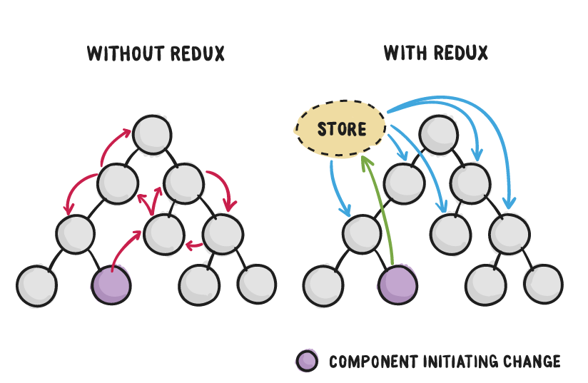
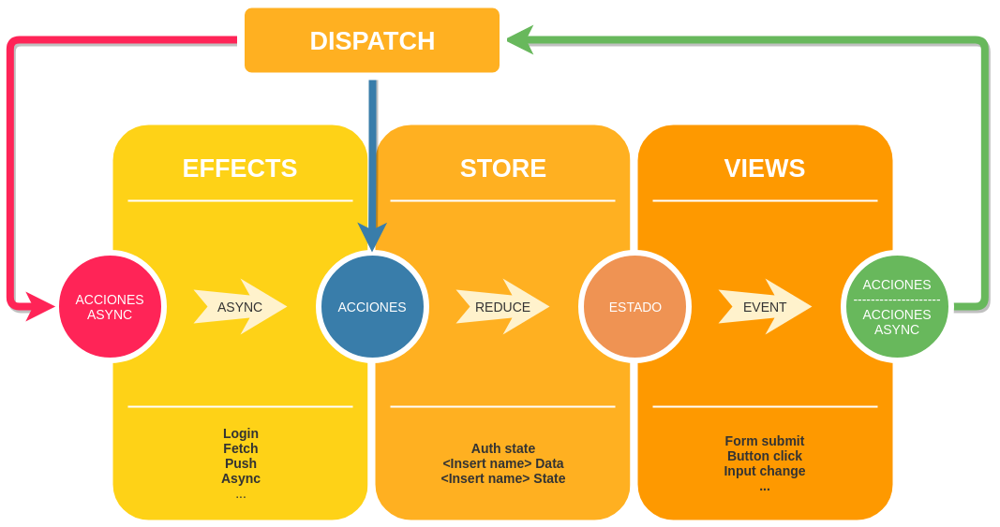
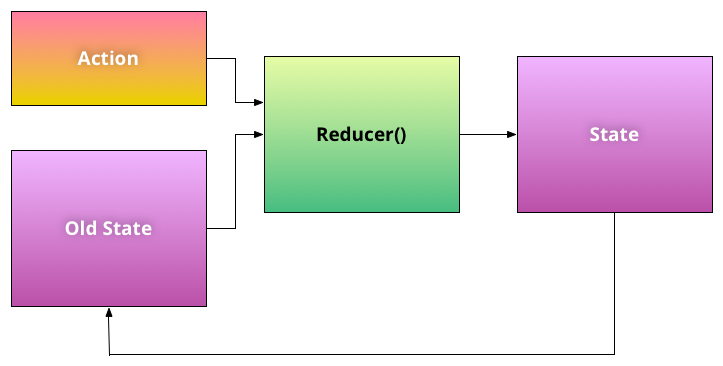

Gestión del estado


O mejor dicho NGRX
aka M
aka C
aka V
Las acciones son objetos JS!!
type Action<T> { // tipo de acción type: string; // datos de la acción payload: T; }
// counter.actions.ts export const INCREMENT = 'INCREMENT'; export const DECREMENT = 'DECREMENT'; // ---------- ACTION CREATORS ---------- export function increment(by: number) { // create the action return { type: INCREMENT, payload: by }; } export function decrement(by: number) { // create the action return { type: DECREMENT, payload: by }; }

El reducer es una función reductora de la forma:
function reduce(state, action) { // code return newState; }
Otro modo de interpretarla es:
state + action = newState;
Ejemplo
// counter.reducer.ts import { INCREMENT, DECREMENT } from './counter.actions.ts'; const initialState = 0; export function counterReducer(state = initialState, action) { switch (action.type) case INCREMENT: return state + action.payload; case DECREMENT: return state - action.payload; default: return state; }
// counter.component.ts import { increment, decrement } from 'app/store/counter/counter.actions.ts'; // code... // inside the view component counter$: Observable<number>; constructor(private store: Store<AppState>) { this.counter$ = store.select((state) => state); } onIncrement(value: number) { this.store.dispatch(increment(value)); } onDecrement(value: number) { this.store.dispatch(decrement(value)); }
<!-- counter.component.html --> <div>{{ counter$ | async }}</div>
Para otra sesión